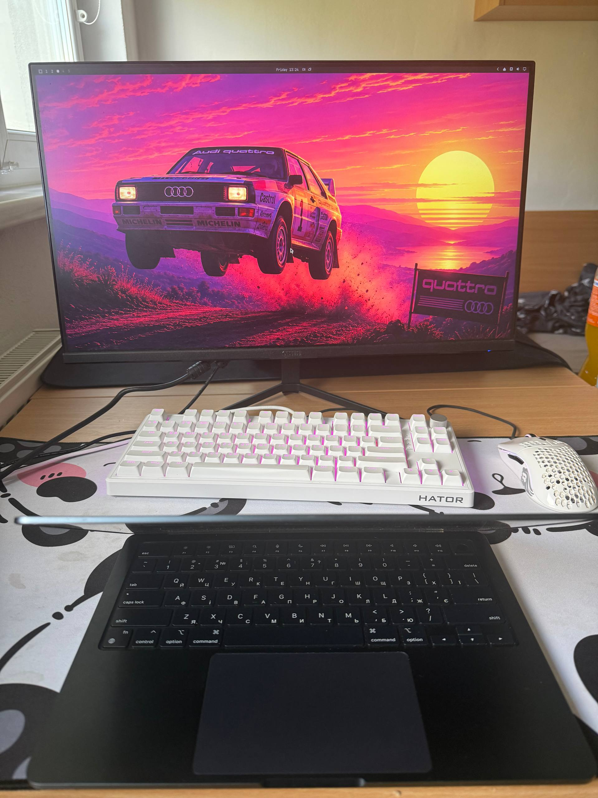

Monitor
Na veľkom monitore mám viac priestoru na čítanie dokumentácie a prácu s kódom.
Pracovné prostredie
Na obrázku je môj pracovný stôl. Vyberte označený bod a prečítajte si, na čo ho používam.

Na veľkom monitore mám viac priestoru na čítanie dokumentácie a prácu s kódom.
Klávesnicu používam pri programovaní v Pythone a pri písaní školských projektov.
Myš mi pomáha pri práci s grafickým prostredím a pri úpravách dokumentov.
Na notebooku skúšam Linux a učím sa, ako spolupracuje softvér s hardvérom.
Veľká podložka mi dáva dosť miesta pre klávesnicu aj myš.